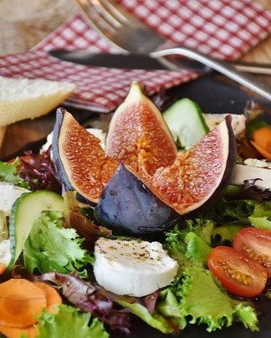
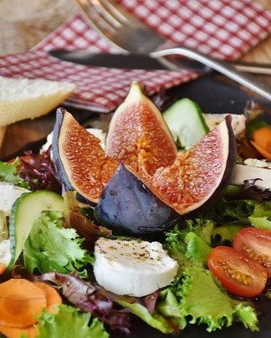

NUESTRA FILOSOFÍA
Nos complace presentarles una experiencia culinaria única que celebra la autenticidad y el calor de la comida casera. Nuestro objetivo principal es crear una experiencia gastronómica memorable.
Nuestro restaurante va más allá de ser solo un lugar para disfrutar de deliciosos platos; es un viaje de regreso a los sabores reconfortantes de la cocina casera, donde cada bocado cuenta una historia de tradición y amor por la buena comida.
Reserva mesa 
